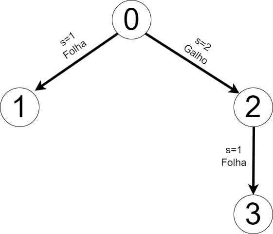
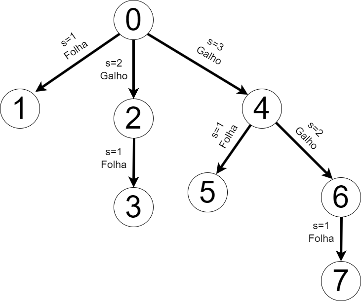
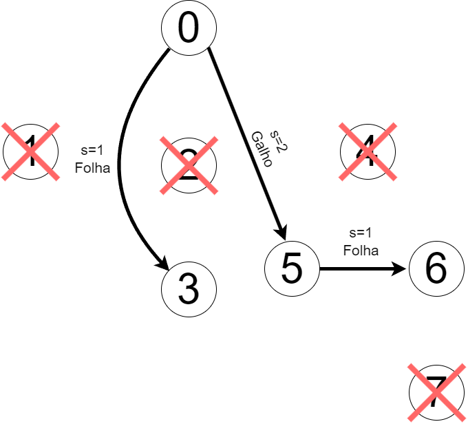
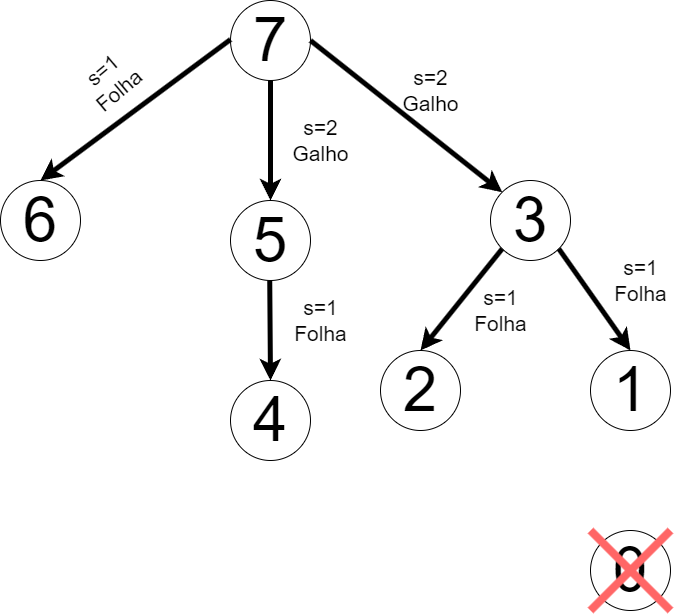

Para implementar a Árvore Geradora Mínima Autonômica sobre o vCube foi utilizado o detector de falhas vCube na versão 2. Além disso foi considerado que o modelo de falhas do sistema é crash.
Após o detector de falhas estabilizar, ou seja, descobrir todos os processos falhos é construido a árvore geradora mínima autonômica. A árvore espera receber como parametros de entrada o processo raiz da árvore, a dimensão do vCube e a lista de processos falhos. A raiz da árvore é passada como parametro na hora de executar o programa C, a dimensão do vCube sempre é log_2(N), sendo N o número de processos e a lista de processos falhos é obtido ápos o detector de falhas estabilizar com o vetor STATE[root].
Para implementar a arvore geradora mínima foi construido a funçao generateSpanningTree. Que recebe como parametro root, dim e failState
root: o processo que é a raiz a partir do qual a árvore geradora mínima será gerada.dim: a dimensão do vCube.failState: um array que indica o estado de falha dos processos. Como o estado de todos os processos são conhecido, pode ter apenas valores como CORRECT (correto) ou FAULTY (falho).1. O corpo da função tem primeiramente um laço for para iterar sobre todos os níveis de cluster do vCube, indo de 1 até log_2(N) clusters:
for (int s = 1; s <= dim; s++) {
...
}2. Apos o loop principal é obtido a lista de processos filhos do cluster s:
node_set *childList = cis(root, s);childList é a lista de processos filhos da raiz no nível s do cluster.
3. É inicializado a variavel found que é utilizada para verificar se há algum filho correto no cluster s.
4. Iteração sobre a lista de procesos filhos para verificar o estado de falha.
for (int i = 0; i < childList->size; i++) {
int child = childList->nodes[i];
if (failState[child] == CORRECT) {
//...
break;
}
}Para cada filho no nível s, a função verifica se o proceso i está correto (CORRECT). Se um filho correto for encontrado, o código dentro do if é executado e o loop é interrompido com o break.
5. Se um processo é encontrado, irá imprimir que um filho correto foi encontrado, então é realizado a seguinte checagem:
generateSpanningTree é chamada recursivamente para gerar a subárvore a partir desse filho.
if (failState[child] == CORRECT) {
printf(" Nível %d - Filho correto encontrado: %d\n", s, child);
found = 1;
if (s > 1) {
printf(" - Filho %d é um galho.\n\n", child);
generateSpanningTree(child, s - 1, failState);
} else {
printf(" - Filho %d é uma folha.\n", child);
}
}6. Caso nenhum filho correto seja encontrado no nível s, e caso s for igual dim, significa que a raiz não possui filhos corretos, então o processo que era galho passa a ser folha, já que é o último processo correto do galho.
if (!found) {
printf(" Nível %d - Nenhum filho correto encontrado.\n", s);
if (s == dim) {
printf(" Nível %d - Raiz %d não possui filhos corretos, é uma folha.\n", s, root);
}
}O código para a função completa está demonstrado abaixo:
void generateSpanningTree(int root, int dim, int *failState) {
for (int s = 1; s <= dim; s++) {
node_set *childList = cis(root, s); // Obtém a lista de filhos no cluster s
int found = 0;
// Verifica se há algum filho correto no nível s
for (int i = 0; i < childList->size; i++) {
int child = childList->nodes[i];
if (failState[child] == CORRECT) {
printf(" Nível %d - Filho correto encontrado: %d\n", s, child);
found = 1;
// Verifica se o nível atual é maior que 1 para decidir se é galho ou folha
if (s > 1) {
printf(" - Filho %d é um galho.\n\n", child);
// Chama recursivamente para gerar a subárvore
generateSpanningTree(child, s - 1, failState);
}
else {
printf(" - Filho %d é uma folha.\n", child);
}
break;
}
}
// Se nenhum filho correto foi encontrado no cluster s
if (!found) {
printf(" Nível %d - Nenhum filho correto encontrado.\n", s);
if (s == dim) {
printf(" Nível %d - Raiz %d não possui filhos corretos, é uma folha.\n", s, root);
} // if (s == dim)
}
set_free(childList); // Libera a memória da lista de filhos
}
printf("Árvore Geradora Mínima gerada a partir da raiz %d está completa.\n\n", root);
}Chamada da função após todos os testes assinalados ao processo root sejam executados:
...
// Verifica se todos os estados dos processos são conhecidos
int allKnown = 1;
for (i = 0; i < N; i++) {
if (processes[root].STATE[i] == UNKNOWN) {
allKnown = 0;
break;
}
}
if (allKnown) {
printf(INFORMAÇOES DA ARVORE GERADORA)
for (i = 0; i < N; i++) {
if (processes[root].failState[i] == FAULTY) {
printf("%d ", i);
}
}
printf("\n\n");
generateSpanningTree(root, log2(N), processes[root].failState);
break; // Sai do loop após gerar a árvore
}
...Disponibilizados na página da matéria
Códigos FontesPara construir os logs do trabalho foi utilizado como base os logs do TP1, as alterações realizadas foram:
Apos o detector de falhas estabilizar o processo root tem o vetor STATE[0] = [0: CORRETO, 1: CORRETO, 2: CORRETO, 3: CORRETO], ou seja todos os processos do sistema estão corretos;
Sendo assim, a arvore geradora minima fica:
Apos o detector de falhas estabilizar o processo root tem o vetor STATE[0]: [0: CORRETO, 1: CORRETO, 2: CORRETO, 3: CORRETO, 4: CORRETO, 5: CORRETO, 6: CORRETO, 7: CORRETO], ou seja todos os processos do sistema estão corretos;
Sendo assim, a arvore geradora minima fica:
Apos o detector de falhas estabilizar o processo root tem o vetor STATE[0]: [0: CORRETO, 1: FALHO, 2: FALHO, 3: CORRETO, 4: FALHO, 5: CORRETO, 6: CORRETO, 7: FALHO, ], os processos 1,2,4 e 7 estão falhos;
Sendo assim, a arvore geradora minima fica:
Os logs gerados para o processo 3 são:
Gerando árvore a partir da raiz 0 com dimensão 3 Nível 1 - Nenhum filho correto encontrado. Nível 2 - Filho correto encontrado: 3 - Filho 3 é um galho. Gerando árvore a partir da raiz 3 com dimensão 1 Nível 1 - Nenhum filho correto encontrado. Nível 1 - Raiz 3 não possui filhos corretos, é uma folha. Árvore Geradora Mínima gerada a partir da raiz 3 está completa.
Inicialmente o processo 3 é considera galho, porém ápos checar que o processo 3 não possue filhos, ele é desconsiderado galho e considerado filho. O mesmo ocorre para o processo 6:
Gerando árvore a partir da raiz 5 com dimensão 2 Nível 1 - Nenhum filho correto encontrado. Nível 2 - Filho correto encontrado: 6 - Filho 6 é um galho. Gerando árvore a partir da raiz 6 com dimensão 1 Nível 1 - Nenhum filho correto encontrado. Nível 1 - Raiz 6 não possui filhos corretos, é uma folha. Árvore Geradora Mínima gerada a partir da raiz 6 está completa.
Apos o detector de falhas estabilizar o processo root tem o vetor STATE[7]: [0: FALHO, 1: CORRETO, 2: CORRETO, 3: CORRETO, 4: CORRETO, 5: CORRETO, 6: CORRETO, 7: CORRETO], os processos 1,2,4 e 7 estão falhos;
Sendo assim, a arvore geradora minima fica:
Inicialmente o processo 1 é considera galho, porém ápos checar que o processo 1 não possue filhos corretos, ele é desconsiderado galho e considerado filho.
Nível 2 - Filho correto encontrado: 1 - Filho 1 é um galho. Gerando árvore a partir da raiz 1 com dimensão 1 Nível 1 - Nenhum filho correto encontrado. Nível 1 - Raiz 1 não possui filhos corretos, é uma folha.
Apos o detector de falhas estabilizar o processo root tem o vetor STATE[0]: [0: CORRETO, 1: CORRETO, 2: CORRETO, 3: CORRETO, 4: CORRETO, 5: CORRETO, 6: CORRETO, 7: CORRETO, 8: CORRETO, 9: CORRETO, 10: CORRETO, 11: CORRETO, 12: CORRETO, 13: CORRETO, 14: CORRETO, 15: CORRETO, ]